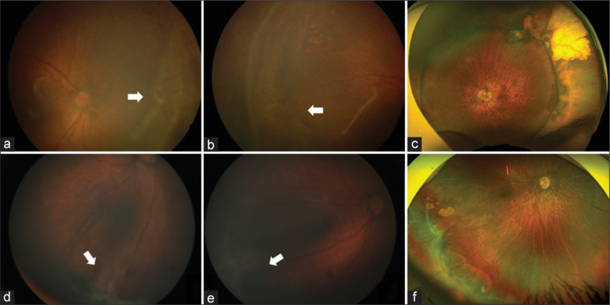
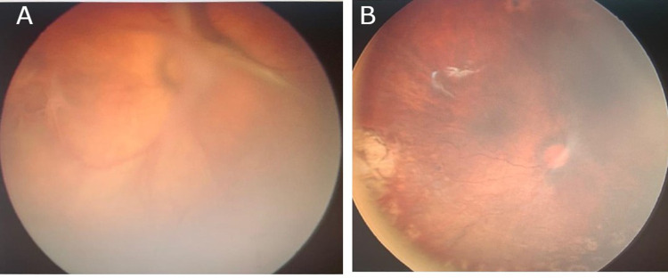
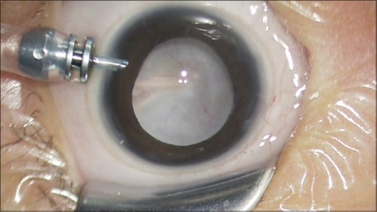
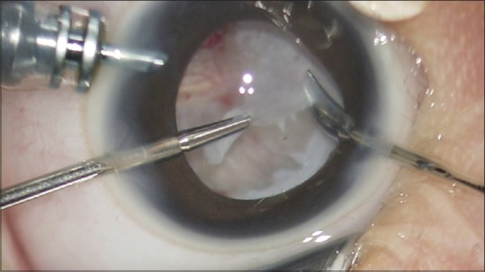

1403 — Phẫu thuật ROP giai đoạn 4–5: đai củng mạc vs cắt dịch kính chừa thể thủy tinh vs cắt thể thủy tinh / Surgery for stage 4–5 retinopathy of prematurity: scleral buckle vs lens-sparing vitrectomy vs lensectomy-vitrectomy
Tags: pattern:bong-vong-mac pattern:co-keo pattern:rop vung:vong-mac vung:dich-kinh score:ICROP protocol:phau-thuat-rop incidentaloma:rop
Mức chắc chắn (certainty): tổng hợp y văn (literature synthesis) — tự biên từ 1 thuần tập 105 mắt đai củng mạc (PMC13271555), 1 tổng quan hệ thống 10 nghiên cứu/1.179 mắt cắt dịch kính (PMC11267137), 2 thuần tập cắt dịch kính 31 và 17 mắt (PMC10759917, PMC2908825), 2 nghiên cứu dài hạn về thị lực – khúc xạ sau cắt dịch kính (PMC12373698, PMC9916407) và 1 bài kỹ thuật có ảnh nội soi (PMC6302567); định nghĩa giai đoạn theo ICROP 3rd edition 2021 (PMID 34247850). Chưa gắn một ca nguyên văn đơn lẻ của nhóm.
Bài này nối tiếp 456 – Bệnh võng mạc trẻ sinh non: zone–stage–plus & AP-ROP, 461 – Chọn thuốc & phác đồ anti-VEGF cho ROP và 458 – Di chứng & theo dõi dài hạn sau ROP. 456 phủ phân loại và sàng lọc; 461 phủ anti-VEGF; 458 phủ di chứng muộn. Bài 1403 trả lời phần còn trống: khi võng mạc đã bong (stage 4–5), chọn đai củng mạc hay cắt dịch kính, có lấy thể thủy tinh hay không, thời điểm và tiên lượng theo giai đoạn.
1. Tổng quan bệnh học – cơ chế hình ảnh
- Sinh lý bệnh (pathophysiology): ROP tiến triển qua pha mạch máu (vasoproliferative) — thiếu oxy võng mạc chưa trưởng thành → VEGF ↑ → tân mạch ở ranh giới võng mạc có mạch/không mạch. Khi tân mạch kèm mô xơ (fibrovascular proliferation) co rút, võng mạc bị kéo bong — bong võng mạc co kéo (tractional retinal detachment — TRD). Đây là bong không do rách ở giai đoạn đầu; rách có thể xuất hiện muộn do co kéo hoặc do can thiệp.
- ICROP 3rd edition (2021) — định nghĩa quyết định mổ (PMID 34247850):
- Stage 4A: bong võng mạc một phần, CHƯA bắt hoàng điểm.
- Stage 4B: bong một phần, ĐÃ bắt hoàng điểm.
- Stage 5A: bong toàn bộ, phễu mở (open funnel) — còn thấy vùng hoàng điểm/đĩa thị ở đáy phễu.
- Stage 5B: bong toàn bộ, phễu đóng (closed funnel) — mất hoàn toàn khoang dưới võng mạc, hai lá võng mạc dính nhau.
- Plus disease / AP-ROP: giãn – vằn xoắn mạch ở ≥ 2 góc phần tư; AP-ROP tiến triển nhanh, thường vùng I, cần điều trị khẩn — đây là nhóm dễ bỏ qua "cửa sổ vàng" trước khi bong.
- TẠI SAO phẫu thuật có tác dụng — cơ chế cơ học:
- Đai củng mạc (scleral buckle): đẩy thành củng mạc vào trong, giảm lực kéo ngoại vi và đưa võng mạc ngoại vi áp lại; hiệu quả khi co kéo chủ yếu ở ngoại vi (stage 4A, > 6 giờ đồng hồ), không giải quyết được màng co kéo ra sau hoàng điểm.
- Cắt dịch kính chừa thể thủy tinh (lens-sparing vitrectomy — LSV): cắt dịch kính – màng trước võng mạc, gỡ lực kéo trực tiếp lên hoàng điểm; giữ thể thủy tinh để tránh nhược thị do mất điều tiết và giảm nguy cơ glaucoma — ưu tiên stage 4A/4B.
- Cắt thể thủy tinh + cắt dịch kính (lensectomy-vitrectomy — LV): cần khi màng sau thể thủy tinh dày (retrolental membrane), đồng tử hẹp, đục thể thủy tinh, hoặc stage 5 không tiếp cận được màng co kéo. Đánh đổi: mất điều tiết, nguy cơ glaucoma, cần kính áp tròng/thể thủy tinh nhân tạo sau này.
- Ngưỡng định lượng nằm lòng (theo giai đoạn):
- Đai củng mạc — 105 mắt (90 trẻ), GA 30,05 ± 2,73 tuần, BW 1.383 ± 411 g; 85 mắt đai quanh, 20 mắt đai đoạn; 75 mắt stage 4A: thành công giải phẫu 90,5% (đai quanh) — 4A 93,9%, 4B 78,9%; 90% (đai đoạn) — 4A 88,8%, 4B 90,9%. Cầu tương đương trung bình −6,00 D (đai quanh) vs −3,12 D (đai đoạn); thị lực chức năng (central, steady, maintained) 32% vs 55%; di chứng thường gặp: kéo đĩa thị (disc drag), lệch hoàng điểm (macular ectopia), kèm cận thị, lác, rung giật (Susvar P et al., Indian J Ophthalmol 2026, PMC13271555).
- Cắt dịch kính — tổng quan hệ thống 10 nghiên cứu, 1.179 mắt: 72% LSV, 28% LV; LSV chủ yếu stage 4, LV chủ yếu stage 5; thành công giải phẫu và chức năng cao hơn ở 4A/4B so với 5; yếu tố tiên lượng tốt: không plus, stage 4, đã laser/anti-VEGF trước đó, giữ thể thủy tinh (Casey A et al., J Ophthalmic Vis Res 2024, PMC11267137).
- Cắt dịch kính — 31 mắt (19 trẻ), GA 29,4 ± 2,1 tuần: thành công 90,9% (4A), 57,1% (4B), 33,3% (5A); chung 64,5%; biến chứng: xuất huyết dịch kính 16,1%, đục thể thủy tinh 16,1%, cắt dịch kính lần hai 9,7%, glaucoma thứ phát 22,6% (Bahrani HM et al., Clin Ophthalmol 2023, PMC10759917).
- LSV — 17 trẻ: thành công chung 58,8%; 4A 75%, 4B 66,7%, stage 5 25%; trong 10 mắt võng mạc áp, 6 mắt có form vision, 3 mắt theo dõi ánh sáng, 1 mắt không cảm nhận ánh sáng (Yu EY et al., Korean J Ophthalmol 2006, PMC2908825).
- Thị lực dài hạn sau cắt dịch kính stage 4 — 42 mắt (35 mắt 4A, 7 mắt 4B), theo dõi ≥ 8 năm: ở 4A, logMAR 0,83 (20/135) → 0,63 (20/85) giữa 5 và 8 tuổi (P < 0,001); 61,8% dịch chuyển cận thị ≥ 1 D; 4B không cải thiện đáng kể; mắt còn thể thủy tinh và mắt trội có thị lực tốt hơn (Tachibana EH et al., Graefes Arch Clin Exp Ophthalmol 2025, PMC12373698).
- LSV stage 4A — 61 mắt, tuổi khám cuối 10,1 ± 3,3 năm: thị lực thập phân trung bình 0,23 ± 0,26; 54,1% đạt ≥ 0,4; 75,5% cận thị cao > −6 D, trung bình −10,1 ± 5,0 D (Iwahashi M et al., Int J Mol Sci 2023, PMC9916407).
- Vai trò của hình ảnh học: chẩn đoán và phân giai đoạn chủ yếu bằng soi đáy mắt gián tiếp + chụp đáy mắt góc rộng (RetCam). Siêu âm B-scan là bắt buộc khi môi trường đục (xuất huyết dịch kính, màng sau thể thủy tinh) để xác định bong võng mạc, phễu mở/đóng, màng co kéo. MRI sọ–hốc mắt chỉ khi leukocoria chưa rõ nguyên nhân hoặc nghi retinoblastoma/u — không dùng thay soi đáy mắt. CT hạn chế vì xạ ở trẻ non tháng.
2. Mẫu hình + chẩn đoán phân biệt theo giai đoạn – vị trí co kéo (gamut)
- Stage 4A — bong ngoại vi chưa bắt hoàng điểm: co kéo ngoại vi > 6 giờ đồng hồ, hoàng điểm còn áp. Lựa chọn: đai củng mạc (nếu co kéo ngoại vi, đai quanh/đoạn) hoặc LSV (nếu co kéo ra sau hơn). Đây là nhóm tiên lượng tốt nhất, thành công ~90%.
- Stage 4B — bong đã bắt hoàng điểm: LSV là lựa chọn chính; đai củng mạc đơn thuần không đủ vì lực kéo đã ra sau hoàng điểm. Thành công thấp hơn 4A (57–79% tùy nghiên cứu).
- Stage 5A — phễu mở: LV (thường phải cắt thể thủy tinh) + bóc màng (membrane peeling)/delamination; thành công thấp (~25–33%); mục tiêu là áp võng mạc giải phẫu, thị lực thường rất kém.
- Stage 5B — phễu đóng: tiên lượng rất xấu; phẫu thuật chọn lọc, chủ yếu giải phẫu; cần tư vấn khả năng không có thị lực hữu ích.
- AP-ROP/plus nặng: ưu tiên laser/anti-VEGF trước nếu chưa bong; nếu đã bong, kiểm soát hoạt tính mạch máu trước/trong mổ để giảm xuất huyết — không mổ trong tình trạng tân mạch đang hoạt động mạnh nếu trì hoãn được an toàn.
- Bệnh giả ROP (pseudo-ROP) — phải loại trừ trước khi mổ:
- Retinoblastoma: khối vôi hóa thô, < 5 tuổi, có thể leukocoria; siêu âm/MRI và không mổ như ROP.
- Coats disease: xuất huyết – tiết dịch, KHÔNG vôi hóa điển hình, thường một bên, trẻ trai; không có tiền sử sinh non.
- PFV/PHPV: dây xơ từ sau thể thủy tinh, nhãn cầu nhỏ, một bên; khác ROP.
- FEVR (familial exudative vitreoretinopathy): bong co kéo hai bên, tiền sử gia đình, không có sinh non — dễ nhầm stage 4–5.
- Toxocariasis: u hạt một bên, bạch cầu ái toan, tiếp xúc đất/chó mèo.
- Norrie disease: mù bẩm sinh + điếc + chậm phát triển, di truyền X-linked.
3. Bảng so sánh phân biệt (ma trận đối chiếu)
| Thực thể/chiến lược (entity) | Hình ảnh – lâm sàng điển hình | Chốt vào (rule-in) | Chốt loại (rule-out) | Gợi ý xác nhận |
|---|---|---|---|---|
| Đai củng mạc (scleral buckle) | Stage 4A, co kéo ngoại vi > 6 giờ, hoàng điểm chưa bắt; đai quanh hoặc đoạn | Co kéo ngoại vi + hoàng điểm còn áp + không có màng sau thể thủy tinh dày | 4B/5, co kéo ra sau hoàng điểm, màng dày → cần cắt dịch kính | Soi đáy mắt góc rộng, B-scan; đánh dấu giờ đồng hồ; theo dõi độ lồi đai |
| LSV (cắt dịch kính chừa thể thủy tinh) | Stage 4A/4B, co kéo ra sau, hoàng điểm bị kéo; thể thủy tinh còn trong | 4B hoặc 4A có co kéo trung tâm + thể thủy tinh trong | Màng sau thể thủy tinh dày/đồng tử hẹp/đục thể thủy tinh → chuyển LV | Siêu âm B-scan, soi đáy mắt; đánh giá khả năng tiếp cận màng |
| LV (cắt thể thủy tinh + cắt dịch kính) | Stage 5A/5B, màng trước võng mạc dày, đồng tử hẹp, đục thể thủy tinh | Stage 5 hoặc không tiếp cận được màng qua thể thủy tinh | Stage 4 còn thể thủy tinh trong, không có chống chỉ định → ưu tiên LSV | Soi đáy mắt/trong mổ; B-scan; đánh giá phễu mở/đóng |
| Anti-VEGF đơn thuần | Plus/AP-ROP chưa bong, tân mạch hoạt động | Chưa có bong võng mạc + plus nặng | Đã bong (stage 4–5) → anti-VEGF không thay thế mổ | Soi đáy mắt, chụp góc rộng; theo dõi tái hoạt |
| Theo dõi (stage 3 thoái triển) | Gờ xơ, tân mạch thoái triển, không bong | Không bong + không plus tiến triển | Bong mới, plus tăng, màng co kéo → can thiệp | Soi đáy mắt định kỳ 1–2 tuần khi còn nguy cơ |
| Retinoblastoma (giả ROP) | Khối vôi hóa thô, leukocoria, không tiền sử sinh non | Vôi hóa trong khối + < 5 tuổi | Tiền sử sinh non + bong co kéo hai bên điển hình → ROP | Siêu âm/MRI, khám chuyên khoa u; không mổ như ROP |

Bệnh nhân stage 4A/4B: (a,b) co kéo võng mạc ngoại vi > 6 giờ đồng hồ trước mổ; (c) ảnh góc rộng sau đai — võng mạc áp, còn lệch hoàng điểm. Nguồn: Susvar P et al., Indian J Ophthalmol 2026 (PMC13271555 Fig. 1), CC BY-NC-ND 4.0, giữ nguyên bản.Ba câu hỏi trước mọi ca stage 4–5
- Hoàng điểm đã bị bắt chưa? (4A vs 4B) — quyết định đai hay cắt dịch kính.
- Lực kéo ở đâu? Ngoại vi (đai) vs ra sau/hoàng điểm (LSV).
- Có tiếp cận được màng qua thể thủy tinh không? Nếu không → LV.
4. Protocol chụp/đánh giá + thuật toán phẫu thuật
4.1. Đánh giá trước mổ (bắt buộc)
- Soi đáy mắt gián tiếp với ấn củng mạc (scleral indentation) — xác định vùng (zone), giai đoạn, giờ đồng hồ co kéo, hoàng điểm.
- Chụp đáy mắt góc rộng (RetCam) để lưu baseline và so sánh; ghi rõ 4A/4B/5A/5B.
- Siêu âm B-scan khi môi trường đục (xuất huyết dịch kính, màng sau thể thủy tinh): xác định bong, phễu mở/đóng, màng co kéo, vôi hóa.
- Đánh giá toàn thân: BPD, tăng áp phổi, tim bẩm sinh, ngưng thở — phối hợp gây mê nhi; cân nhắc mổ tuần tự hai mắt ở trẻ nguy cơ cao gây mê, với điều kiện kiểm soát được đường thở và theo dõi sau mổ.
- Loại trừ giả ROP trước khi mổ: tiền sử sinh non – cân nặng – tuần thai, tính chất hai bên, vôi hóa, tiền sử gia đình, siêu âm/MRI.
4.2. Thuật toán chọn phẫu thuật
flowchart TD
A["ROP: xác định vùng, giai đoạn, plus"] --> B{"Đã bong võng mạc?"}
B -->|"Chưa"| C["Stage 1–3: laser/anti-VEGF theo chỉ định"]
B -->|"Rồi"| D{"Hoàng điểm bị bắt?"}
D -->|"Chưa (4A)"| E{"Co kéo ngoại vi > 6 giờ?"}
E -->|"Có"| F["Đai củng mạc quanh/đoạn"]
E -->|"Không, co kéo ra sau"| G["LSV: cắt dịch kính chừa thể thủy tinh"]
D -->|"Rồi (4B)"| G
G --> H{"Màng sau thể thủy tinh dày, đồng tử hẹp?"}
H -->|"Có"| I["LV: cắt thể thủy tinh + cắt dịch kính"]
H -->|"Không"| J["Tiếp tục LSV"]
I --> K["Theo dõi: nhãn áp, võng mạc, khúc xạ, nhược thị"]
J --> K
F --> K
4.3. Kỹ thuật và theo dõi
- Đai củng mạc: đai quanh (encircling) cho co kéo lan rộng, đoạn (segmental) cho co kéo khu trú; không siết quá chặt gây thiếu máu/hoại tử; theo dõi độ lồi đai, nhãn áp, tưới máu. Có thể tháo đai sau khi võng mạc ổn định để giảm cận thị do đai — theo dõi sát sau tháo (Hình 2 của PMC13271555).
- LSV: 23G/25G/27G, trocar đặt sau rìa giác mạc thích hợp ở trẻ nhỏ, tránh chạm thể thủy tinh; cắt dịch kính trước, bóc màng co kéo (delamination) từ ngoại vi vào trung tâm; kiểm tra võng mạc chu biên tìm rách iatrogenic; cầm máu bằng áp lực/đốt nhẹ.
- LV: chỉ định khi không thể bảo tồn thể thủy tinh hoặc stage 5; sau mổ cần kính áp tròng/thể thủy tinh nhân tạo và theo dõi glaucoma.
- Sau mổ: ngày 1–3 kiểm tra nhãn áp, tiền phòng, võng mạc; 1 tuần, 1 tháng, 3 tháng, 6 tháng, sau đó hằng năm. Mỗi lần: thị lực (tuổi), khúc xạ lý liệt, nhãn áp, soi đáy mắt, tìm glaucoma, đục thể thủy tinh, tái bong, co kéo hoàng điểm.
- Phối hợp: điều trị nhược thị khi trẻ đủ tuổi; kính đủ độ; theo dõi lác (bài 469/472) và cận thị nặng (bài 458).
5. Biến thể bình thường và cạm bẫy
- Phân giai đoạn sai vì môi trường đục: xuất huyết dịch kính che hoàng điểm → dễ gọi 4A trong khi thực tế 4B. B-scan và soi lại sau khi máu lắng là bắt buộc trước khi chọn đai.
- Mổ quá muộn: thành công giảm mạnh từ 4A (
90%) → 4B (57–79%) → 5 (~25–33%); chờ "võng mạc tự áp" ở stage 4 là mất cơ hội. - Mổ khi tân mạch còn hoạt động mạnh: nguy cơ xuất huyết dịch kính và co kéo tái phát; cân nhắc laser/anti-VEGF trước nếu an toàn.
- Chạm thể thủy tinh trong LSV: gây đục thể thủy tinh — biến chứng 16,1% trong một thuần tập (PMC10759917); dùng đường vào phù hợp, kiểm soát áp lực.
- Rách võng mạc iatrogenic: kiểm tra chu biên 360° cuối mổ; nếu có rách → đai/cắt dịch kính + laser.
- Glaucoma thứ phát: 22,6% sau cắt dịch kính (PMC10759917); theo dõi nhãn áp suốt đời, đặc biệt sau LV.
- Cận thị nặng sau mổ: 75,5% > −6 D, trung bình −10,1 D sau LSV stage 4A (PMC9916407); không quy kết do "kính sai" — cần khúc xạ lý liệt và theo dõi trục nhãn cầu.
- Bỏ sót mắt thứ hai: ROP thường hai bên; khám cả hai mắt mỗi lần, kể cả khi một mắt đã mổ.
- Nhầm với retinoblastoma: vôi hóa thô + không tiền sử sinh non → không mổ như ROP; siêu âm/MRI và chuyển chuyên khoa u.
- Tưởng "mổ xong là hết": thị lực có thể cải thiện tiếp đến 8 tuổi ở 4A, nhưng 4B không cải thiện — cần theo dõi dài hạn và phục hồi chức năng.
6. Tự lượng giá — Blind Quiz
Ca 1 — Trẻ sinh non 28 tuần, 6 tháng tuổi (tuổi chỉnh), đáy mắt phải: co kéo võng mạc ngoại vi, hoàng điểm còn áp; mắt trái đã laser.

- Hỏi: giai đoạn nào? Chọn đai hay cắt dịch kính? Vì sao? Kết cục giải phẫu kỳ vọng?
Bấm để hiện đáp án (findings + chẩn đoán)
- (A) ảnh trước mổ: bong võng mạc co kéo (TRD) stage 4A, hoàng điểm còn áp; (B) sau LSV: võng mạc áp, còn lệch hoàng điểm.
- Chọn LSV nếu co kéo lan ra sau; đai củng mạc nếu co kéo ngoại vi > 6 giờ và hoàng điểm chưa bị kéo. Ca này ảnh sau mổ cho thấy LSV đã được dùng.
- Tiên lượng: stage 4A là nhóm tốt nhất — đai ~90%, LSV ~75–91% tùy nghiên cứu; nhưng vẫn có cận thị nặng và nhược thị về sau.
- Nguồn ảnh: Bahrani HM et al., Clin Ophthalmol 2023 (PMC10759917 Fig. 2), CC BY-NC 3.0.
Ca 2 — Trẻ 4 tháng tuổi (tuổi chỉnh), đáy mắt trái: xuất huyết dịch kính + bong võng mạc đã bắt hoàng điểm.

- Hỏi: vì sao đây là 4B chứ không phải 4A? Thành công giải phẫu thấp hơn 4A bao nhiêu? Biến chứng cần cảnh báo?
Bấm để hiện đáp án (findings + chẩn đoán)
- (A) xuất huyết dịch kính + màng co kéo bắt hoàng điểm → 4B; (B,C) sau cắt dịch kính: võng mạc áp một phần, còn co kéo/màng tồn dư.
- Thành công 4B thấp hơn 4A rõ: 57,1% vs 90,9% (PMC10759917); tổng quan 10 nghiên cứu cũng xác nhận stage 4 > stage 5 và 4A > 4B (PMC11267137).
- Cảnh báo: xuất huyết dịch kính, đục thể thủy tinh, glaucoma thứ phát, cắt dịch kính lần hai; thị lực lâu dài ở 4B không cải thiện đáng kể sau 5 tuổi (PMC12373698).
- Nguồn ảnh: Bahrani HM et al., Clin Ophthalmol 2023 (PMC10759917 Fig. 4), CC BY-NC 3.0.
Ca 3 — Trẻ 5 tháng tuổi, đồng tử trắng, siêu âm: bong võng mạc toàn bộ, phễu mở; không thấy vôi hóa.

- Hỏi: chẩn đoán? Vì sao phải cắt thể thủy tinh? Tiên lượng thị lực và cần loại trừ gì?
Bấm để hiện đáp án (findings + chẩn đoán)
- Ảnh: màng trắng sau thể thủy tinh (retrolental fibroplasia) + bong võng mạc toàn bộ → stage 5A (phễu mở trên siêu âm).
- Phải LV vì màng sau thể thủy tinh dày, không tiếp cận được màng co kéo qua thể thủy tinh; ảnh trong mổ cho thấy cắt thể thủy tinh + bóc màng.

- Tiên lượng: thành công ~25–33%; thị lực thường rất kém, mục tiêu chính là áp võng mạc giải phẫu và giữ nhãn cầu.
- Loại trừ: retinoblastoma (vôi hóa thô, < 5 tuổi), Coats, PFV, FEVR — siêu âm/MRI trước khi mổ.
- Nguồn ảnh: Kusaka S et al., Taiwan J Ophthalmol 2018 (PMC6302567 Fig. 4–5), CC BY-NC-SA 4.0, giữ nguyên bản.
Bài liên quan chéo
- 456 – Bệnh võng mạc trẻ sinh non: zone–stage–plus & AP-ROP (phân loại, sàng lọc)
- 461 – Chọn thuốc & phác đồ anti-VEGF cho ROP (anti-VEGF trước/ sau mổ)
- 458 – Di chứng & theo dõi dài hạn sau ROP (cận thị, lác, nhược thị)
- 468 – Sàng lọc ROP từ xa & AI (phát hiện sớm trước khi bong)
- 472 – Phẫu thuật lác ở trẻ sinh non/ROP (lác sau ROP)
- 412 – U trong nhãn cầu (retinoblastoma — giả ROP)
Ảnh
- Ảnh lấy từ Europe PMC/PMC (bản open access), giữ nguyên bản, không crop/ghép; nguồn – giấy phép từng file trong
images/CREDITS.md. - Tên file:
1403_rop-gd<...>_<nội dung>_PMC<ID>-Fig<k>.jpg.
Không dùng để chẩn đoán độc lập khi chưa có người hướng dẫn.